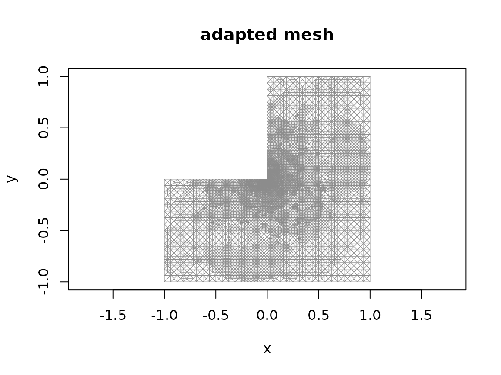
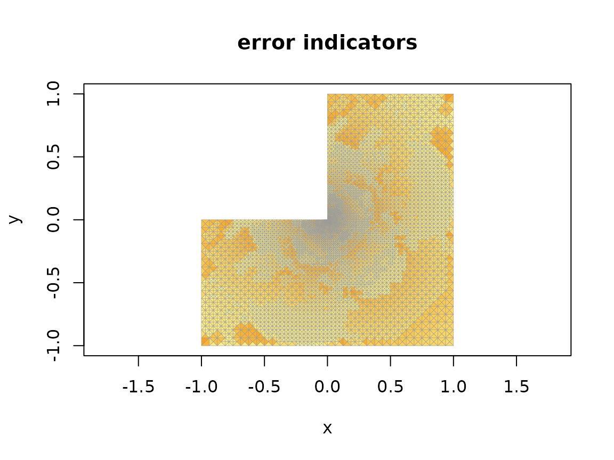
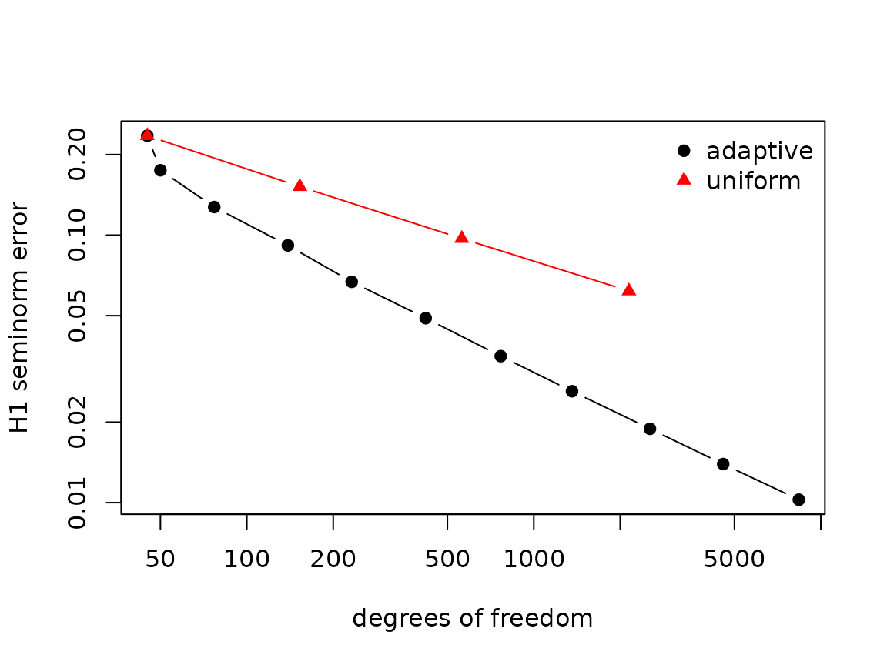

Why adapt
The a priori estimate |u - u_h|_{H^1} \le C h\,|u|_{H^2} assumes a smooth solution. Near reentrant corners, the solution has a singularity and uniform refinement converges more slowly. Adaptive methods refine where the error is large, guided by an a posteriori estimator computed from u_h and the data.
The residual estimator
For -\nabla\cdot(k\nabla u) + b\cdot\nabla
u + cu = f, estimate_error() computes, for every
element T,
\eta_T^2 = h_T^2\,\|f - cu_h - b\cdot\nabla u_h + \nabla\cdot(k\nabla u_h)\|_T^2 + \tfrac12\sum_{E\subset\partial T\ \text{interior}} h_E\,\|[k\nabla u_h\cdot n]\|_E^2 + \sum_{E\subset\partial T\cap\Gamma_N} h_E\,\|h - k\nabla u_h\cdot n\|_E^2 .
The first term measures how far u_h is from satisfying the PDE inside elements; the second measures the jump of the normal flux across edges. Up to constants, \eta = (\sum_T\eta_T^2)^{1/2} bounds the energy error from above and below for diffusion-dominated problems.
On a smooth problem, estimator and error decrease together:
exact <- function(x, y) sin(pi * x) * sin(pi * y)
gradient <- function(x, y) cbind(pi * cos(pi * x) * sin(pi * y), pi * sin(pi * x) * cos(pi * y))
f <- function(x, y) 2 * pi^2 * exact(x, y)
prob <- poisson_problem(pde_mesh_rectangle(nx = 4), source = f, boundary = dirichlet_bc(0))
t(sapply(c(8, 16, 32), function(n) {
s <- solve_pde(update_mesh(prob, pde_mesh_rectangle(nx = n)))
e <- estimate_error(s)$total; err <- errornorm(s, exact, "H1_semi", gradient = gradient)
c(n = n, estimator = e, H1_error = err, ratio = e / err)
}))
#> n estimator H1_error ratio
#> [1,] 8 2.3863137 0.4317983 5.526455
#> [2,] 16 1.2183397 0.2175363 5.600626
#> [3,] 32 0.6137031 0.1089754 5.631573The ratio (the effectivity index) is nearly constant.
Marking and refinement
mark_elements() implements Doerfler marking: choose a
smallest set \mathcal M with \sum_{T\in\mathcal M}\eta_T^2 \ge
\theta\sum_T\eta_T^2. refine_mesh() then bisects the
marked elements by newest vertex bisection, adding refinement of
neighbors so that the mesh stays conforming.
The L-shaped domain
On \Omega = (-1, 1)^2 without the upper left quadrant, the harmonic function u = r^{2/3}\sin(2\varphi/3) (angle \varphi measured from the negative x axis) has an unbounded gradient at the reentrant corner. Uniform refinement converges like N^{-1/3} in terms of the number of unknowns N; the optimal rate for P1 is N^{-1/2}.
Lv <- rbind(c(-1, -1), c(1, -1), c(1, 1), c(0, 1), c(0, 0), c(-1, 0))
phi <- function(x, y) (atan2(y, x) - pi) %% (2 * pi)
u_l <- function(x, y) sqrt(x^2 + y^2)^(2 / 3) * sin(2 * phi(x, y) / 3)
g_l <- function(x, y) {
r <- sqrt(x^2 + y^2); th <- atan2(y, x); ph <- phi(x, y); a <- 2 / 3 * r^(-1 / 3)
cbind(a * (sin(2 * ph / 3) * cos(th) - cos(2 * ph / 3) * sin(th)),
a * (sin(2 * ph / 3) * sin(th) + cos(2 * ph / 3) * cos(th)))
}
m0 <- pde_mesh_polygon(Lv, h = 0.5)
probL <- poisson_problem(m0, source = 0, boundary = dirichlet_bc(u_l))
ad <- adaptive_solve(probL, theta = 0.5, max_iterations = 14, max_dofs = 5000,
exact = u_l, gradient = g_l)
ad
#> Adaptive finite-element solution
#> iteration ndof elements estimator error_L2 error_H1_semi
#> 0 45 64 0.83594 2.035e-02 0.23525
#> 1 50 74 0.54365 1.233e-02 0.17478
#> 2 77 126 0.40570 6.221e-03 0.12736
#> 3 139 240 0.29549 3.545e-03 0.09154
#> 4 234 422 0.21826 1.818e-03 0.06672
#> 5 424 786 0.16074 9.570e-04 0.04866
#> 6 780 1480 0.11854 5.098e-04 0.03526
#> 7 1355 2608 0.08851 3.016e-04 0.02616
#> 8 2541 4940 0.06478 1.537e-04 0.01894
#> 9 4555 8924 0.04795 8.336e-05 0.01398
#> 10 8383 16528 0.03545 4.440e-05 0.01030
plot(ad$solution$space$mesh, markers = FALSE, main = "adapted mesh")
plot_indicators(ad$solution$space$mesh, estimate_error(ad$solution), main = "error indicators")
Compare with uniform refinement:
uni <- convergence_study(probL, u_l, g_l, refinements = 3, norms = "H1_semi")
uni
#> Mesh convergence study
#> h ndof H1_semi rate_H1_semi
#> 0.5000 45 0.23525 NA
#> 0.2500 153 0.15177 0.6323
#> 0.1250 561 0.09714 0.6438
#> 0.0625 2145 0.06182 0.6519
h <- ad$history
plot(h$ndof, h$error_H1_semi, log = "xy", type = "b", pch = 19,
xlim = range(c(h$ndof, uni$ndof)), ylim = range(c(h$error_H1_semi, uni$H1_semi)),
xlab = "degrees of freedom", ylab = "H1 seminorm error")
lines(uni$ndof, uni$H1_semi, type = "b", pch = 17, col = "red")
legend("topright", c("adaptive", "uniform"), pch = c(19, 17), col = c("black", "red"), bty = "n")
k <- nrow(h)
c(adaptive_rate = log(h$error_H1_semi[k] / h$error_H1_semi[k - 4]) / log(h$ndof[k] / h$ndof[k - 4]),
uniform_rate = log(uni$H1_semi[4] / uni$H1_semi[2]) / log(uni$ndof[4] / uni$ndof[2]))
#> adaptive_rate uniform_rate
#> -0.5181399 -0.3401300Adaptivity recovers the optimal rate -1/2, while uniform refinement shows -1/3. Concentrating refinement is not automatically better, though: on smooth problems uniform refinement is just as good and cheaper per step, and an estimator that ignores important error sources (for example strong advection) can mislead the marking.
Solution transfer
refine_mesh() and refine_uniform() record
the parent edge of each new node; transfer_function()
interpolates a function onto the refined mesh, exactly for P1. This is
what an adaptive time stepper or a nonlinear solver would use to warm
start on the new mesh.